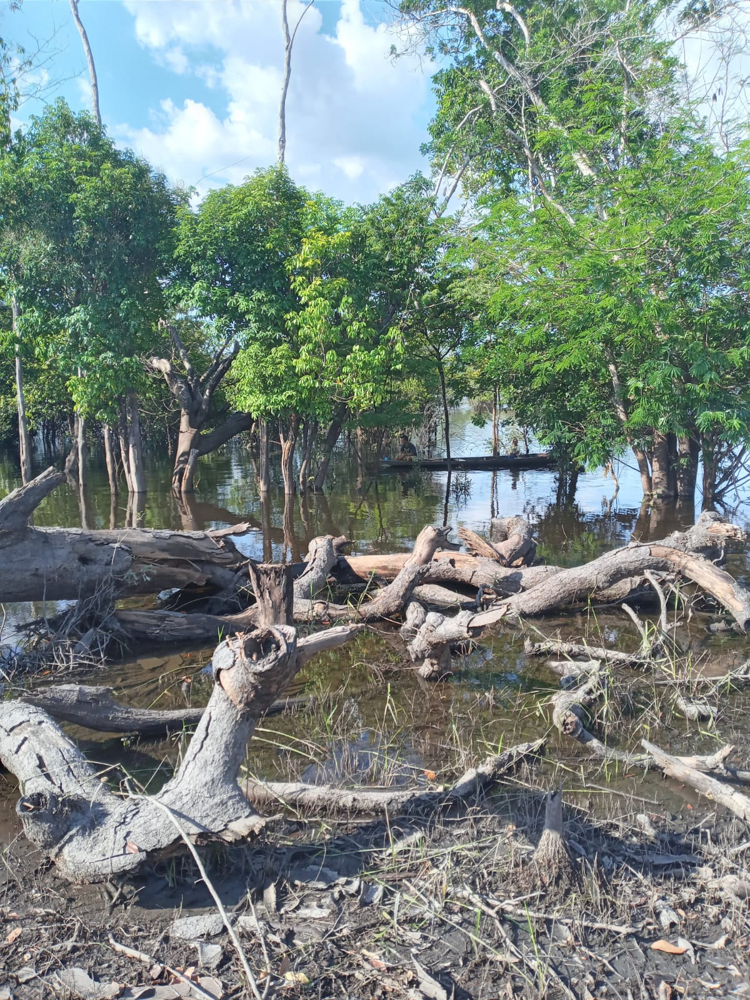
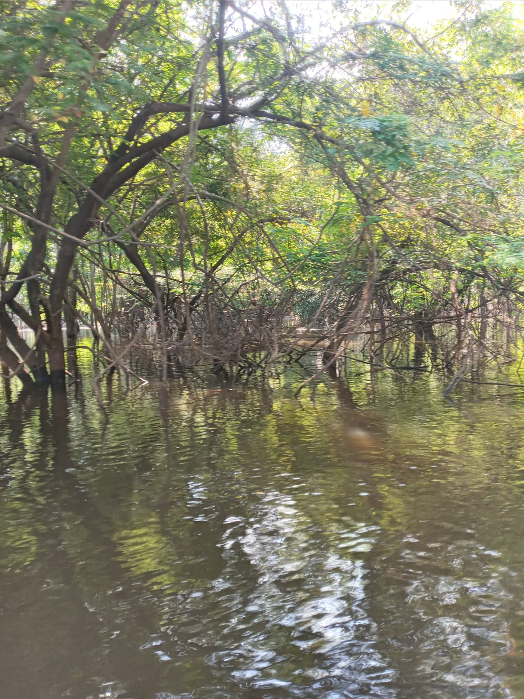

Tipos de Produção
A produção agropecuária é uma das bases da economia nacional. Envolve tanto o cultivo de lavouras como a criação de animais, sendo responsável por grande parte do abastecimento alimentar das cidades.
Na produção industrial, os recursos naturais e matérias-primas são transformados em produtos acabados. Alimentos processados, roupas e utensílios são frutos dessa etapa fundamental para o consumo urbano.
O extrativismo compreende a retirada de recursos diretamente da natureza. Pode ser vegetal, como a castanha-do-pará, ou mineral, como a extração de ferro e bauxita. É comum nas regiões Norte e Nordeste.
Principais Regiões Produtoras
O Brasil é diverso em termos de produção. O Centro-Oeste é forte na produção de grãos, o Sul no leite e carnes, o Sudeste na produção industrial e o Norte no extrativismo vegetal.
Tecnologias e Inovação
Com o avanço tecnológico, o campo se moderniza com técnicas de agricultura de precisão, sensores climáticos, uso de satélites e maquinário automatizado, que melhoram o rendimento e reduzem desperdícios.
As inovações tornam a produção mais eficiente, sustentável e conectada com as necessidades urbanas. A tecnologia também facilita o rastreamento dos produtos, garantindo mais segurança ao consumidor.